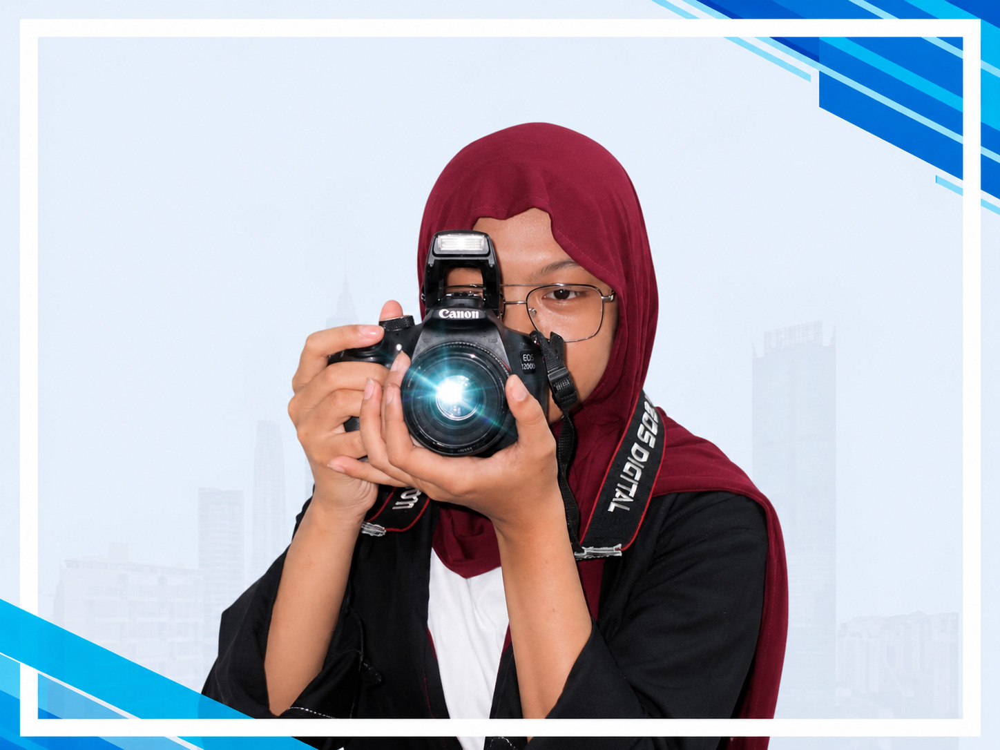
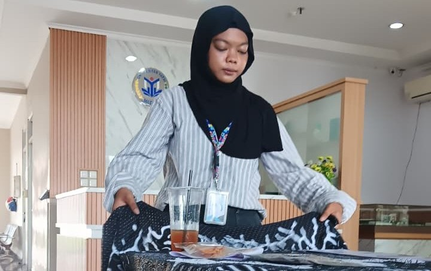
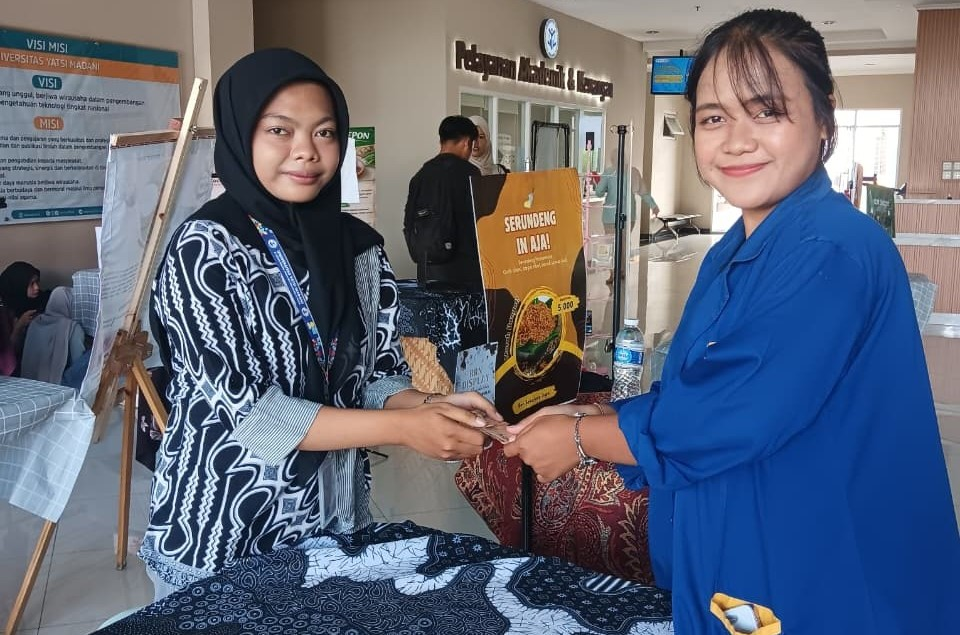
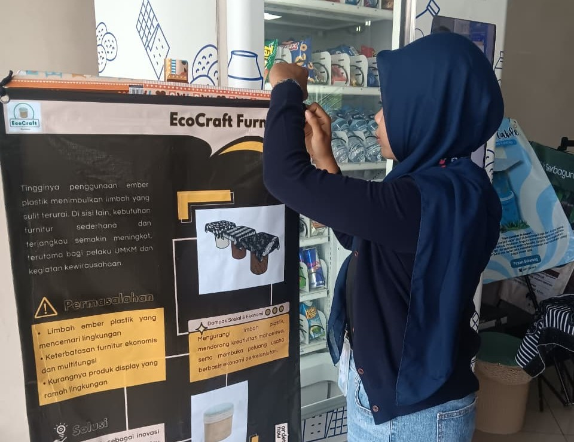
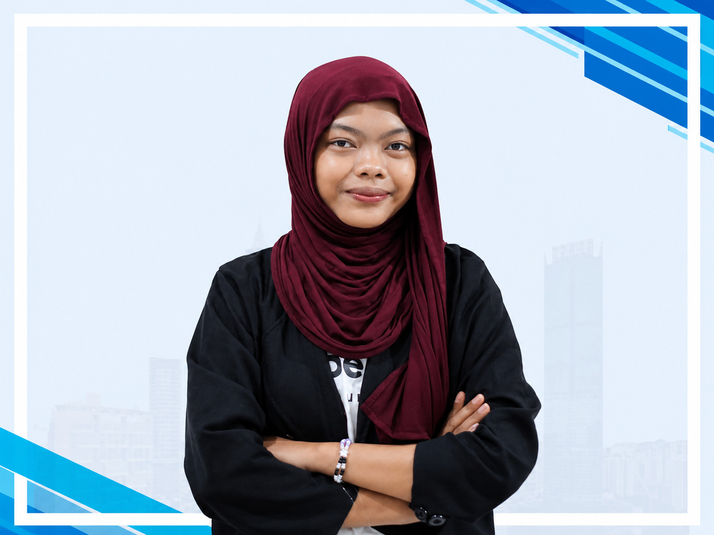

Dokumentasi Aksi Nyata
Tim Media Kreatif – Organisasi Peduly Tangerang



Tim Humas – Pengabdian Masyarakat Kelurahan Sumur Pacing


EcoCraft Project — Kreativitas & Keberlanjutan Limbah




Individu yang memiliki ketertarikan tinggi pada bidang Bisnis Digital, komunikasi publik, dan media digital. Berpengalaman dalam pengelolaan konten, publikasi kegiatan, serta pengembangan branding digital melalui pendekatan kreatif, analitis, dan strategis untuk ekosistem startup.
Saya adalah Putri Ismah Ashilah, mahasiswa aktif Program Studi Bisnis Digital yang berfokus pada pengembangan ide kreatif startup, strategi komunikasi publik, serta manajemen branding digital. Saya memiliki kompetensi dalam menyusun konsep komunikasi digital interaktif yang relevan dengan tren audiens modern.
Melalui simulasi bisnis dan keterlibatan aktif dalam organisasi sosial, saya terus mengasah kepekaan analitis produk, perancangan model bisnis, serta eksekusi growth marketing yang krusial bagi keberlanjutan sebuah bisnis startup digital.
Pengabdian Masyarakat Kelurahan Sumur Pacing
SMK Lab Business School
SMKN 2 Kabupaten Tangerang
Peduly Tangerang
Prish Nana & Smootime Digital Project
Pengembangan identitas visual premium untuk UMKM makanan ringan, mencakup strategi konten media sosial dan promosi tertarget bagi generasi muda.
Kunjungi Website Live 🔗Membangun platform website responsif dengan konsep modern minimalis demi memperkuat fungsionalitas publikasi komersial secara digital.
Kunjungi Website Live 🔗Inovasi produk kerajinan ramah lingkungan yang memadukan kreativitas digital dengan pemanfaatan limbah daur ulang untuk menciptakan produk bernilai estetika dan ekonomi tinggi.
Mengonsep aset media visual digital organisasi guna meningkatkan interaksi, jangkauan organik, dan kredibilitas di ruang publik digital.
AI Personal Stylist for Local Streetwear Enthusiasts.
EdgyFit bukan sekadar aplikasi match outfit biasa. Platform ini menggunakan mesin AI rekomendasi interaktif yang mampu mendeteksi pakaian yang sedang digunakan pengguna melalui foto, lalu memberikan saran pelengkap pakaian secara spesifik. Misalnya: "Coba padukan dengan tas Evernext Slingbag Kelvin, sepatu Aerostreet Riven Sneakers, atau Evilspirit Opalina Black Jacket Corduroy agar gaya streetwear kamu lebih maksimal."
Fokus utama diarahkan pada komunitas pencinta fesyen unisex, streetwear, dan gaya alternatif (edgy) dari generasi muda (Gen Z & Milenial) yang ingin tampil beda sekaligus bangga menggunakan produk buatan lokal (Local Pride).
Berbeda dari kompetitor global yang terlalu umum, EdgyFit memiliki basis data khusus yang didedikasikan 100% untuk ekosistem brand lokal independen Indonesia. AI kami dilatih untuk memahami estetika potongan oversized, earthy tone, hingga grafis tegas khas streetwear lokal.
Mendapatkan keuntungan melalui sistem komisi afiliasi (affiliate revenue) setiap kali pengguna membeli produk rekomendasi AI (seperti Aerostreet atau Evilspirit) langsung lewat aplikasi, serta ruang iklan premium bagi brand lokal baru untuk mempromosikan rilisan artikel terbaru mereka.
Mengembangkan keahlian dalam manajemen bisnis berbasis IT, analisis data e-commerce, strategi growth marketing, serta aktif menyalurkan ilmu teori ke masyarakat melalui rangkaian proyek pengabdian sosial sejak semester awal.
Membentuk kompetensi kejuruan dasar, kedisiplinan administratif, etika profesional kerja, serta kesiapan mental untuk integrasi ke dunia industri atau perguruan tinggi.
Memulai minat awal dalam kegiatan organisasi sekolah, kerja tim, serta dasar-dasar kreativitas digital.
Membentuk landasan karakter, disiplin, serta minat awal dalam bersosialisasi dan kreativitas.





Volunteer Peduly Tangerang

Pelatihan Kewirausahaan Sumur Pacing

Pelatihan Kewirausahaan Pemuda Kota Tangerang

Pelatihan BLK Disnaker ChatBot

Tim Media Kreatif Peduly Tangerang

Webinar AI for Digital Marketing

Webinar Bisnis Digital Talks

Partisipasi Indonesian Youth Excursion Network

Fair Essay Competition

Seminar Fakultas Teknologi dan Bisnis

Seminar Capital Market

Seminar Generasi Cerdas Finansial

HAKI Prish Nana

HAKI Tiga Simpul Kopi
Dipublikasikan di Kompasiana
Baca Artikel ↗Dipublikasikan di Kompasiana
Baca Artikel ↗Dipublikasikan di Kompasiana
Baca Artikel ↗Dipublikasikan di Kompasiana
Baca Artikel ↗Dipublikasikan di Kompasiana
Baca Artikel ↗Dipublikasikan di Kompasiana
Baca Artikel ↗Dipublikasikan di Kompasiana
Baca Artikel ↗Dipublikasikan di Kompasiana
Baca Artikel ↗Dipublikasikan di Kompasiana
Baca Artikel ↗Dipublikasikan di Kompasiana
Baca Artikel ↗Dipublikasikan di Kompasiana
Baca Artikel ↗Dipublikasikan di Kompasiana
Baca Artikel ↗Dipublikasikan di Kompasiana
Baca Artikel ↗Dipublikasikan di Kompasiana
Baca Artikel ↗Dipublikasikan di Kompasiana
Baca Artikel ↗Dipublikasikan di Kompasiana
Baca Artikel ↗Dipublikasikan di Kompasiana
Baca Artikel ↗Dipublikasikan di Kompasiana
Baca Artikel ↗Dipublikasikan di Kompasiana
Baca Artikel ↗Dipublikasikan di Kompasiana
Baca Artikel ↗